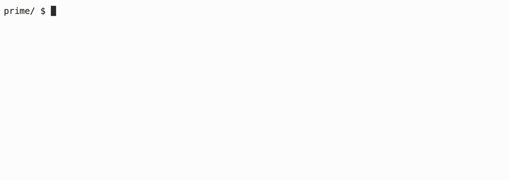

Prime
Learning Goals
- Practice using
forloops - Using modulo
- Creating a Boolean function
Background
Prime numbers are defined as whole numbers greater than 1, whose only factors are 1 and itself. So 3 is prime because its only factors are 1 and 3, while 4 is composite and not prime, because it is the product of 2 × 2. In this lab you will write an algorithm to generate all prime numbers in a range specified by the user.
- Hints
- Modulo may come in handy, as it produces the remainder when dividing two integers.
- By definition, 1 is not a prime number.
- There is only one even prime number, 2.
Demo

Getting Started
- Log into cs50.dev using your GitHub account.
- Click inside the terminal window and execute
cd. - At the
$prompt, typemkdir prime - Now execute
cd prime - Then copy and paste
wget https://cdn.cs50.net/2022/fall/labs/1/prime.cinto your terminal to download this lab’s distribution code. - You are to complete the Boolean function,
prime, which tests if a number is prime, and returns true if it is, and false if it is not.
Implementation Details
The easiest way to check if a number is prime, is to try dividing it by every number from 2 up to, but not including, the number itself. If any number divides into it with no remainder, that number is not prime.
The main function in the distribution code contains a for loop that iterates through the range specified by the user, with both ends inclusive. For example, if the user types in 1 for min and 100 for max, the for loop will test each number, 1 to 100. Each of these numbers is passed to a function, prime, that you will implement to return either true or false depending on whether the number is prime.
Thought Question
- Can you make the prime-finding algorithm more efficient than checking if a number is divisible by every number between 2 and 1 less than itself? Can you think of another way to generate prime numbers?
How to Test Your Code
Your program should behave per the examples below.
prime/ $ ./prime
Minimum: 1
Maximum: 100
2
3
5
7
11
13
17
19
23
29
31
37
41
43
47
53
59
61
67
71
73
79
83
89
97
You can check your code using check50, a program that CS50 will use to test your code when you submit, by typing in the following at the $ prompt. But be sure to test it yourself as well!
check50 cs50/labs/2023/x/prime
Green smilies mean your program has passed a test! Red frownies will indicate your program output something unexpected. Visit the URL that check50 outputs to see the input check50 handed to your program, what output it expected, and what output your program actually gave.
To evaluate that the style of your code (indentations and spacing) is correct, type in the following at the $ prompt.
style50 prime.c
How to Submit
No need to submit! This is an optional practice problem.